정보통신기사(구) (2020-06-27 기출문제)
1과목: 디지털 전자회로
1. 정류회로에서 부하 양단의 평균 직류전압이 15[V]이고, 맥동률이 2[%]일 때 교류분은 얼마나 포함되어 있는가?
- 0.2[V]
- 2[V]
- 0.3[V]
- 3[V]
(정답률: 73%)

2. 다음과 같은 회로의 입력에 120[Vrms], 60[Hz] 정현파 신호가 인가 되었을 때, 출력에서 리플전압의 피크-피크값은 약 몇 [V]인가? (단, 다이오드에 걸리는 전압강하는 무시한다.)
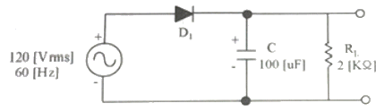
- 11.57[V]
- 12.57[V]
- 13.57[V]
- 14.57[V]
(정답률: 52%)
3. 다음 정전압 회로에서 출력전압(Vo)으로 알맞은 것은? (단, VZ=Vf이다.)
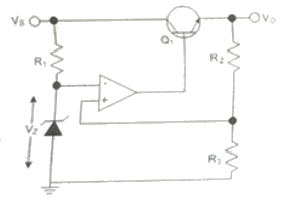
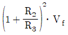
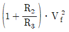
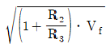
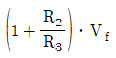
(정답률: 71%)
4. 50[kHz]의 2 decade 높은 주파수는 얼마인가?
- 50[kHz]
- 100[kHz]
- 500[kHz]
- 5[MHz]
(정답률: 69%)
5. 다음 중 증폭기에 대한 설명으로 옳은 것은?
- 입력신호의 에너지를 증가시켜 출력 측에 큰 에너지의 변화로 출력하는 회로이다.
- 출력 내에 포함되어 있는 리플성분을 제거시켜 일정한 크기의 전압을 유지시키는 회로이다.
- 교류전압을 사용하기 적당한 직류전압으로 변환하여 주는 회로이다.
- 출력부하전류 및 온도에 상관없이 일정한 직류 출력전압을 제공하는 회로이다.
(정답률: 82%)
6. 이미터 접지형 증폭기에서 부하 저항 10[kΩ]이고, hfe=50, hie=2[kΩ], hce=100[㎂/V]일 때 전류 이득의 크기는 얼마인가?
- 10
- 15
- 20
- 25
(정답률: 46%)
7. 다음과 같은 전력증폭회로에서 대기온도 상승으로 최대 전력소비 정격이 절반으로 감소될 경우, 증폭회로의 안정적인 동작을 위한 저항 Rc값은 얼마로 변경되어야 하는가?
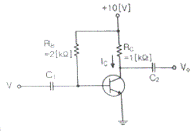
- 2.0[kΩ]
- 0.5[kΩ]
- 1.0[kΩ]
- 4.0[kΩ]
(정답률: 65%)
8. 수정발진기는 임피던스가 어떤 조건일 때 가장 안정된 발진을 하는가?
- 저항성
- 용량성
- 유도성
- 유도성과 용량성 결합
(정답률: 68%)
9. RC 발진회로에서 RC 시정수를 높게 할 경우 발진주파수는 어떻게 변하는가?
- 발진주파수가 높아진다.
- 발진주파수가 낮아진다.
- 무한대가 된다.
- 아무런 변화가 없다.
(정답률: 74%)
10. 다음 중 발진회로의 주파수 변동 요인이 아닌 것은?
- 전원 전압의 변동
- 부하의 변동
- 온도의 변동
- Q값의 변화
(정답률: 68%)
11. 다음의 FM 변조지수 중 대역폭이 가장 넓은 것은?
- 1
- 2
- 3
- 4
(정답률: 83%)
12. FM 검파 방식 중 주파수 변화에 의한 전압 제어 발진기의 제어 신호를 이용하여 복조하는 방식은?
- 계수형 검파기
- PLL형 검파기
- 포스터-실리 검파기
- 비 검파기
(정답률: 81%)
13. 다음 중 주파수변조를 진폭변조와 비교한 설명으로 틀린 것은?
- 점유주파수대폭이 넓다.
- 초단파대의 통신에 적합하다.
- S/N비가 좋아진다.
- Echo의 영향이 많아진다.
(정답률: 74%)
14. 다음 중 그림과 같은 변조파형을 얻을 수 있는 변조방식에 대한 설명으로 옳은 것은?
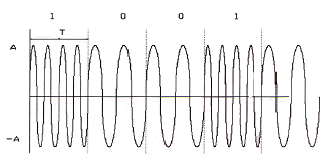
- 정현파의 주파수에 정보를 싣는 FSK 방식으로 2가지 주파수를 이용한다.
- 정현파의 주파수에 정보를 싣는 ASK 방식으로 2가지 진폭을 이용한다.
- 정현파의 주파수에 정보를 싣는 QSK 방식으로 2가지 진폭을 이용한다.
- 정현파의 위상에 정보를 싣는 2위상 편이변조방식이다.
(정답률: 82%)
15. 다음 중 슈미트 트리거(Schmitt Trigger)의 응용 분야가 아닌 것은?
- 쌍안정 회로
- 구형파 발생 회로
- 전압 비교 회로
- 정현파 발생 회로
(정답률: 61%)
16. 다음 그림과 같은 회로에 대한 설명으로 옳은 것은?
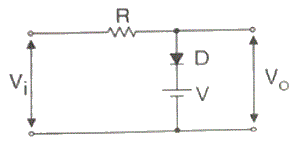
- 입력 파형의 아랫부분을 잘라내는 베아스 클리퍼 회로이다.
- 입력 파형의 윗부분을 잘라내는 피크 클러퍼 회로이다.
- 직렬형 베이스 클러퍼 회로이다.
- 입력 파형의 위, 아래 부분을 일정하게 잘라내는 클리퍼 회로이다.
(정답률: 78%)
17. 다음 그림의 논리 회로에 대한 논리식은?
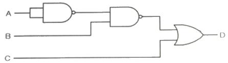
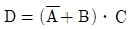
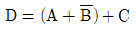
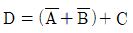
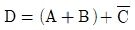
(정답률: 83%)
18. J-K 플립플롭을 사용하여 D형 플립플롭을 만들기 위한 외부 결선방법으로 맞는 것은?
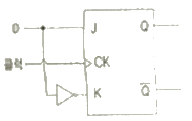
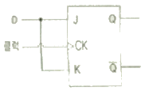
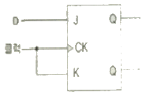
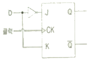
(정답률: 75%)
19. 다음 디코더의 설명 중 옳은 것은?
- 2진수로 표시된 입력 조합에 따라 출력이 하나만 동작하도록 하는 회로
- 특정한 입력을 몇 개의 코드화된 신호의 조합으로 바꾸는 장치
- 연산회로의 일종으로 보수 합산을 행한다.
- N개의 입력데이터에서 1개의 입력씩만 선택하여 송신하는 회로
(정답률: 53%)
20. 다음 그림과 같이 2n개(0~7)의 입력을 넣었을 때 출력이 2진수(000~111)로 나오는 회로의 명칭은?
- 디코더(Decoder) 회로
- A-D 변환회로
- D-A 변환회로
- 인코더(Encoder) 회로
(정답률: 80%)
2과목: 정보통신 시스템
21. 다음 중 DSU(Digital Service Unit)의 기능으로 옳은 것은?
- 디지털 데이터를 디지털 신호로 변환
- 아날로그 데이터를 디지털 신호로 변환
- 디지털 신호를 아날로그 데이터로 변환
- 아날로그 신호를 디지털 데이터로 변환
(정답률: 87%)
22. 회선 교환방식과 비교할 때 메세지 교환방식의 장점이 아닌 것은?
- 회선의 효율성이 크다.
- 실시간 통신 또는 대화식 통신에 적합하다.
- 전송량이 많은 경우 한 개의 메세지를 여러 목적지로 전송할 수 있다.
- 에러 제어와 회복 절차를 구성 할 수 있다.
(정답률: 77%)
23. LAN과 LAN을 연결하는 장비로, OSI 7계층 중 데이터 링크계층에 해당하는 것은?
- 브리지
- 라우터
- 리피터
- 게이트웨이
(정답률: 79%)
24. 동축케이블을 백본 네트워크로 사용하는 네트워크에서 서브 네트워크를 구성하려고 AUI 포트에 접속하는 네트워크 장비는?
- 라우터
- 게이트웨이
- 트랜시버
- 리피터
(정답률: 63%)
25. 정보를 송수신할 수 있는 능력을 가진 개체로써, 주어진 입력에 대하여 어떤 기능을 수행하고 출력하는 것은?
- 데이터(Data)
- 엔티티(Entity)
- 프로토콜(protocol)
- 스테이트(State)
(정답률: 79%)
26. OSI 참조모델에서 통신기기와 네트워크 간의 통신 경로를 설정하거나 경로의 유지 ㆍ 해제를 규정하는 계층에 해당하지 않는 계층은?
- 물리계층
- 데이터링크계층
- 표현계층
- 네트워크계층
(정답률: 66%)
27. OSI 참조모델에서 N-1계층 패킷의 데이터 부분은 N계층의 패킷(데이터와 헤더) 전체를 포함한다. 이러한 개념을 무엇이라고 하는가?
- 서비스
- 인터페이스
- 대등 - 대 - 대등 프로세스
- 캡슐화
(정답률: 83%)
28. OSI 참조모델에서 각 계층별 기능 중 종점간의 오류수정과 흐름제어를 수행하여 신뢰성 있고 투명한 데이터 전송을 제공하는 계층은?
- 데이터링크계층
- 네트워크계층
- 트랜스포트계층
- 세션계층
(정답률: 74%)
29. 다음 중 정보통신 기술 분야의 표준화를 담당하는 국제표준기구는?
- ITU(International Telecommunication Union)
- IMO(International Maritime Organization)
- WTO(World Trade Organization)
- TTA(Telecommunication Technology Association)
(정답률: 88%)
30. 전화통신망(PSTN)에서 인접선로간 차폐가 완전하지 않아, 인접선로상의 다른 신호에 영향을 미쳐 발생하는 품질저하 현상은?
- 누화(Cross Talk)
- 신호감쇠
- 에코(Echo)
- 신호지연
(정답률: 85%)
31. 토큰 링 프레임(Token Ring Erame) 은 데이터 프레임과 토큰 프레임으로 구분할 수 있다. 토큰 프레임의 구성요소가 아닌 것은?
- FC (Frame Control) : 프레임 제어
- SD (Start Delimiter) : 시작 구분자
- AC (Access Control) : 접근 제어
- ED (End Delimiter) : 끝 구분자
(정답률: 57%)
32. 무선통신에서 백색잡음(White Noise)에 대한 설명으로 옳지 않은 것은?
- 열 잡음이 대표적 예이다.
- 백색잡음은 신호에 더해지는 형태이다.
- 주파수 전 대역에서 전력스펙트럼 밀도가 거의 일정하다.
- 레일리 분포 특성을 보인다.
(정답률: 65%)
33. 이동통신망에서 착 ㆍ 발신되는 신호 처리, 기지국 감시 및 제어, 위치등록의 기능을 수행하는 구성 요소는?
- 이동통신 교환기
- 휴대용 단말기
- BSC
- HLR/AC
(정답률: 66%)
34. 다음 중 광대역통합망(BcN)의 계층 구분에 대한 설명으로 옳지 않는 것은?
- 홈네트워크/단말 계층 : 통합단말이용 직접 접속, 홈네트워크를 통한 접속
- 가입자망 계층 : 광대역의 다양한 유무선 및 방송 네트워크들 간에 핸드오버가 진원되는 구조
- 전달망 계층 : ATM 기반의 단일망, QoS, 보안 등이 보장되는 광대역 전달기능을 갖는 네트워크
- 서비스 및 제어계층 : 개방형 API 구현, 소프트스위치 도입
(정답률: 47%)
35. 다음 중 USN의 구성요소로 적합하지 않는 것은?
- 선서노드(Sensor Node)
- 싱크노드(Sink Node)
- 게이트웨이(Gateway)
- RFID서버
(정답률: 77%)
36. 정보통신시스템 분석의 목적에 관한 내용으로 맞지 않는 것은?
- 새로운 시스템 설계의 기초자료를 얻는다.
- 비능률적이고 낭비적인 요소와 문제점을 발견할 수 있다.
- 시스템 또는 각 구성요소에 장애가 발생했을 때 회복을 위한 수리의 간편성, 정기적인 점검자료를 얻는다.
- 전산화에 따른 효과분석을 할 수 있는 기초자료를 얻는다.
(정답률: 61%)
37. 20개의 전화국 간을 메쉬(Mesh)형으로 연결하려면 필요한 회선 수는?
- 190개
- 200개
- 260개
- 380개
(정답률: 86%)
38. IEEE에서 제정한 무선 LAN의 표준은?
- 802.3
- 802.4
- 802.9
- 802.11
(정답률: 80%)
39. 정보통신시스템에 대한 보안방법으로 적합하지 않은 것은?
- 물리적 보안
- 기술적 보안
- 관리적 보안
- 심층적 보안
(정답률: 78%)
40. 대칭키 암호화 방식인 왈쉬코드를 이용하여 암호화 복호화를 수행하려한다. 아래와 같은 조건일 때 수신측에는 어떤 데이터가 추출되는가?
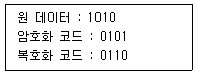
- 1111
- 1001
- 0110
- 0000
(정답률: 78%)
3과목: 정보통신 기기
41. 다음 중 데이터 전송계에서 신호변환 외에 전송신호의 동기제어 송수신 확인, 전송 조작절차의 제어 등을 담당하는 역할을 하는 장치는?
- DCE
- DTE
- DDU
- DID
(정답률: 82%)
42. 컴퓨터가 어떤 터미널로 전송할 데이터가 있는 경우 그 터미널이 수신할 준비가 되어 있는지를 묻고 준비가 되어 있다면 컴퓨터는 터미널로 데이터를 전송하는 것은 다음 어느 것인가?
- CONTENTION
- ENQ
- SELECTION
- POLL
(정답률: 81%)
43. 정보 단말기의 기능 중 사람이 식별 가능한 데이터를 통신장비가 처리 가능한 2진 신호로 변환하거나 그 역(逆)을 행하는 기능은?
- 신호 변환 기능
- 입 ㆍ 출력 기능
- 송 ㆍ 수신 제어 기능
- 에러 제어기능
(정답률: 60%)
44. 입력회선이 10개인 집중화기에서 출력회신을 몇 개까지 설계할 수 있는가?
- 10
- 11
- 13
- 15
(정답률: 85%)
45. 다음 중 고속의 송신 신호를 다수의 직교하는 협대역 반송파로 다중화 시키는 변조방식은?
- EBCDIC
- CDMA
- OTDM
- OFDM
(정답률: 83%)
46. 다음 중 LAN 장비에서 네트워크계층의 연결장비인 것은?
- Router
- Bridge
- Repeater
- Hub
(정답률: 86%)
47. 라우터를 로컬 내에서만 연결하여 관리할 수 있는 인터페이스(포트)는 무엇인가?
- 이더넷 포트
- 직렬 포트
- 콘솔 포트
- Auxiliary 포트
(정답률: 76%)
48. 다음 중 게이트웨이 사이에서 물리적으로 통신하되, 암호화 통신은 논리적으로 하는 방식으로 옳은 것은?
- IDS
- VPN
- Firewall
- IPS
(정답률: 65%)
49. 다음 중 디지털 전화기의 특징에 대한 설명으로 틀린 것은?
- 음질이 우수하다.
- 기능이 다양하다.
- 데이터 단말기의 접속이 용이하다.
- 회로가 단순하다.
(정답률: 88%)
50. 유선 전화양의 구성 요소로 교환기와 단말기를 연결시켜 주고, 신호와 정보를 전달하는 것은?
- 가입자 선로
- 중계 선로
- 스위치
- 프로그램 기억 장치
(정답률: 67%)
51. 디지털 화상회의 시스템에서 QCIF 포맷을 흑백화면으로 25프레임, 8비트로 샘플링을 한다면 데이터 전송률은 약 얼마인가?
- 5[Mbps]
- 10[Mbps]
- 20[Mbps]
- 40[Mbps]
(정답률: 60%)
52. PSTN 상에서 대화형 멀티미디어 응용을 지원하고, 64[kbps] 이하의 낮은 전송률을 대상으로 전송하며, Sub-QCIF, QCIF, CIF, 4CIF, 16CIF를 지원하는 동영상 압축방식은?
- H.261
- H.263
- MPEG-1
- MPEG-2
(정답률: 61%)
53. 영상 통신 회의 방식의 종류에 해당하지 않는 것은?
- VRS(영상응답시스템)
- TV회의
- 정지화 통신회의
- Computer 회의
(정답률: 61%)
54. 다음 중 ZigBee 통신방식의 특징으로 옳지 않은 것은?
- 저전력 구내무선통신기술이다.
- 근거리 고속통신에 적합하다.
- 성형, 망형 등 다양한 네트워크 토폴로지를 지원한다.
- 네트워크의 안전성을 요구하는 RF 어플리케이션에 사용된다.
(정답률: 60%)
55. 다음 중 정지위성 통신에 대한 설명으로 틀린 것은?
- 다원 접속 가능 및 고품질 통신 가능하다.
- 통신 영역이 넓고 난시청 지역 적다.
- 고정통신에 적합하며 대량정보 전송 가능하다.
- 채널 수의 증가로 채널당 고비용을 소모한다.
(정답률: 74%)
56. 다음 중 트래픽(Traffic)에 대한 설명으로 틀린 것은?
- 트래픽양 = 전화의 호수 x 평균 보류시간
- 가입자가 통화를 위하여 발신한 호의 집합체이다.
- 1일중 호가 가장 적게 발생한 1시간을 최번시라 한다.
- 통화 성공률 = (통화 성공한 호수 / 발생한 총 호수)x100%
(정답률: 80%)
57. 어느 멀티미디어 기기의 전송대역폭이 6[MHz]이고 전송속도가 19.93[Mbps]일 때, 이 기기의 대역폭 효율값은 약 얼마인가?
- 2.23
- 3.23
- 5.25
- 6.42
(정답률: 87%)
58. 다음 중 멀티미디어의 특징으로 틀린 것은?
- 디지털화
- 통합성
- 단방향성
- 상호작용성
(정답률: 90%)
59. 다음 중 IPTV의 설명으로 틀린 것은?
- IPTV는 인터넷과 TV(Set-Top Box)를 결합하여 콘텐츠를 서비스한다.
- 인터넷망과 TV 단말기를 융합해 확장 가능성이 크다.
- TV 수준의 영상 품질을 유지하며 영상 QoS를 만족 해야 한다.
- 이용자의 요청에 따라 실시간 방송 콘텐츠와 주문형 비디오 등 다양한 콘텐츠를 제공하는 단방향 서비스이다.
(정답률: 79%)
60. 다음 중 MPLS(Multi Protocol Label Switching) 기반의 인터넷서비스의 특징이 아닌 것은?
- 교환기능과 제어기능이 분리되어 다양한 전달망에 적용될 수 있으며 이기종간에도 동일한 제어기능을 적용할 수 있다.
- 레이블에 목적지뿐만 아니라 서비스등급의 의미를 부여할 수 있으므로 IP QoS 제공이 용이하다.
- 레이블에 의한 터널링의 구성이 가능하므로 이를 이용한 VPN 서비스제공이 가능하다.
- 헤드처리 오버헤드가 증가되어도 기능망을 이용하므로 기존 라우터에 비해 대용량 구성이 용이하다.
(정답률: 72%)
4과목: 정보전송 공학
61. 채널의 대역폭이 1,000[Hz]이고 신호대 잡음비가 3일 경우 채널용량은 얼마인가?
- 1,500[bit/sec]
- 2,000[bit/sec]
- 2,500[bit/sec]
- 3,000[bit/sec]
(정답률: 67%)
62. 다음 중 디지털 데이터의 변조방식으로 적합하지 않은 것은?
- ASK
- PSK
- FSK
- DSB
(정답률: 85%)
63. 다음 중 다중화에 대한 설명으로 알맞은 것은?
- 다수의 신호에 대응하는 다수의 채널로 전송하는 방식이다.
- 하나의 신호를 다수의 채널로 전송하는 방식이다.
- 하나의 신호를 하나의 채널로 전송하는 방식이다.
- 다수의 신호를 동시에 하나의 채널로 전송하는 방식이다.
(정답률: 77%)
64. 다음 중 OTDR(Optical Time Domain Reflectometer) 특징으로 틀린 것은?
- 광선로의 특성, 접점 손실과 고장점을 찾는 광선로 측정 장비이다.
- 광선로 특성을 측정하기 위해 광커플러를 이용하여 광선로에 연결한다.
- 레일레이산란에 의한 후방산란광을 이용하여 광섬유 손실 특성을 측정한다.
- 광선로에 광펄스들을 입사시켜 되돌아온 파형에 대해 주파수 영역에서 측정한다.
(정답률: 64%)
65. 설계자가 감쇠 특성을 고려하여 통신시스템을 설계할 때 유의하지 않아도 되는 사항은?
- 수신기의 전자회로가 신호를 검출하여 해석할 수 있을 정도로 수신된 신호는 충분히 켜야 한다.
- 오류가 발생하지 않을 정도로 신호는 잡음보다 충분히 커야 한다.
- Pair 케이블을 조밀하게 감을수록 비용이 낮고 성능은 좋아진다.
- 감쇠는 주파수가 증가함에 따라 증가하는 특성을 보인다.
(정답률: 80%)
66. 다음 중 동축 케이블의 특징으로 알맞지 않은 것은?
- 협대역 전송에 이용되며 근단누화가 많이 발생한다.
- 고주파에서는 외부도체의 차폐가 우수하며 누화 특성이 개선된다.
- 내부도체와 외부도체의 절연이 극히 좋아 전력전송이 가능하다.
- 저주파에서는 누화가 발생하기 때문에 60[kHz] 이하에서는 사용하지 않는다.
(정답률: 72%)
67. 다음 중 동축케이블 RG(Radio Guide) 규격과 특성임피던스의 연결이 옳은 것은?
- RG-6 : 75[Ω]
- RG-8 : 75[Ω]
- RG-11 : 50[Ω]
- RG-59 : 50[Ω]
(정답률: 46%)
68. 다음과 같은 전소매체에 대한 표기방법에 대한 설명으로 옳지 않은 것은?
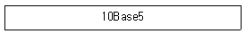
- 전송속도가 10[Mbps]이다.
- 기저대역 전송을 행한다.
- 전송매체가 동축케이블이다.
- 전송거리가 최장 5[km]이다.
(정답률: 83%)
69. 다음 괄호 안에 들어갈 내용으로 알맞은 것은?
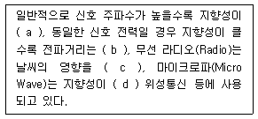
- (a) 크며, (b) 멀고, (c) 받으며, (d) 크므로
- (a) 크며, (b) 짧고, (c) 안받으며, (d) 작으므로
- (a) 작으며, (b) 멀고, (c) 받으며, (d) 크므로
- (a) 작으며, (b) 짧고, (c) 안받으며, (d) 작으므로
(정답률: 84%)
70. 다음 주 HDLC 데이터 전송 모드에서 복합국끼리는 상대방 복합국의 허가가 없어도 명령과 응답을 송신할 수 있는 모드는 무엇인가?
- 비동기 평형모드(ABM)
- 표준(정규) 응답모드(NRM)
- 비동기 응답모드(ARM)
- 절단모드(DCM)
(정답률: 66%)
71. 다음 중 4선식 회선에 가장 효율적인 통신 방식은?
- 단방향 통신
- 반이중 통신
- 전이중 통신
- 기저대역 통신
(정답률: 83%)
72. 전송방식에는 크게 동기식과 비동기식으로 구분된다. 다음 중 동기식 전송방식의 특징이 아닌 것은?
- 전송할 정보 묶음 단위로 앞뒤에 동기문자를 가지며 전송효율이 높다.
- 클럭(Clock)을 동기신호로 사용한다.
- 주로 전송 속도가 9,600[bps] 이상에서 사용한다.
- 전송할 묶음 문자 사이에 휴지 간격(idle time)이 존재한다.
(정답률: 78%)
73. 4개의 문자 A, B, C, D중 하나를 보내는 정보원이 있다. 각각 문자의 발생 확률이 1/2, 1/4, 1/8, 1/8인 경우 한 문자에 대한 평균 정보량은?
- 1.75 bit/symbol
- 2 bit/symbol
- 2.5 bit/symbol
- 2.75 bit/symbol
(정답률: 77%)
74. 다음 중 게이트웨이 장비에 대한 설명으로 틀린 것은?
- 네트워크 내의 병목현상을 일으키는 지점이 될 수 있다.
- 프로토콜 구조가 상이한 네트워크들을 연결한다.
- 네트워크 내의 트래픽 혼잡상태를 제어한다.
- 이종 프로토콜의 변환 기능을 수행한다.
(정답률: 52%)
75. 다음 중 IPv4와 IPv6의 연동 방법으로 틀린 것은?
- 이중 스택(Dual Stack)
- 터널링(Tunneling)
- IPv4./IPv6 변환(Translation)
- 라우팅(Routing)
(정답률: 76%)
76. 다음 중 IPv4에 비해 IPv6에서 보완된 기능이 아닌 것은?
- 패킷 크기 확장
- 특별한 처리를 위한 플로우 라벨링 능력 제공
- 인증과 비밀성을 제공
- 제한된 주소 할당
(정답률: 80%)
77. 다음 중 라우터의 주요 기능이 아닌 것은?
- 경로 설정
- IP 패킷 전달
- 라우팅 테이블 갱신
- 폭주 회피 라우팅
(정답률: 73%)
78. 통신속도가 2,000[bps]인 회선에서 1시간 전송했을 때, 에러 비트수가 36[bit]였다면, 이 통신회선의 비트 에러율은 얼마인가?
- 2.5 × 10-6
- 2.5 × 10-5
- 5 × 10-6
- 5 × 10-5
(정답률: 78%)
79. 물리계층 4대 특성 중 DTE와 DCE간의 신호의 전압레벨, 상승시간, 하강시간, 잡음이득을 규정한 것은?
- 기계적 특성
- 전기적 특성
- 기능적 특성
- 절차적 특성
(정답률: 80%)
80. 다음 중 통신 프로토콜 구성의 기본요소가 아닌 것은?
- 구문(Syntax)
- 타이밍(Timing)
- 의미(Semantics)
- 연결(Connection)
(정답률: 85%)
5과목: 전자계산기일반 및 정보통신설비기준
81. 주소영역(address space)이 1[GB]인 컴퓨터가 있다. 이 컴퓨터의 MAR(memory address register)의 크기는 얼마인가?
- 30[bit]
- 30[byte]
- 32[bit]
- 32[byte]
(정답률: 60%)
82. 바이트(8bit) 단위로 주소지정을 하는 컴퓨터에서 MAR(Memory Adress Register)과 MDR(Memory Data Register)의 크기가 각각 32비트이다. 512Mb(Megabit) 용량의 반도체 메모리 칩으로 이 컴퓨터의 최대 용량으로 주기억장치의 메모리 배열을 구성하고자 한다. 필요한 칩의 개수는?
- 8개
- 16개
- 32개
- 64개
(정답률: 49%)
83. 프로세서, 주기억장치, I/O 모듈이 한 개의 버스를 공유할 때 사용하는 주소지정 방식 중 격리형 또는 분리형 I/O(Isolated I/O) 방식에 관한 사항은 어느 것인가?
- 많은 종류의 I/O 명령어들을 사용할 수 있다.
- 귀주한 주기억자이 주소영역이 I/O 장치들을 위하여 사용된다.
- 프로그래밍을 더 효율적으로 할 수 있다.
- 특정 I/O 명령들에 의해서만 I/O 포트들을 엑세스할 수 있다.
(정답률: 70%)
84. 다음 중 2진수 (110010)2를 8진수로 올바르게 변환한 것은?
- (60)8
- (61)8
- (62)8
- (63)8
(정답률: 82%)
85. 다음 중 중앙처리장치(CPU)의 스케줄링 기법을 비교하는 성능 기준으로 옳지 않은 것은?
- CPU 활용률 : CPU가 작동한 총시간 대비 프로세스들이 실제 사용시간
- 처리율(Throughput) : 단위 시간당 처리 중인 프로세스의 수
- 대기시간(Waiting Time) : 프로세스가 준비 큐(Ready Queue)에서 스케줄링될 때까지 기다리는 시간
- 응답시간 : 대화형 시스템에서 입력한 명령의 처리결과가 나올때까지 소요되는 시간
(정답률: 62%)
86. 특정한 짧은 시간 내에 이벤트나 데이터의 처리를 보증하고, 정해진 기간 안에 수행이 끝나야 하는 응용 프로그램을 위하여 만들어진 운영 체제는?
- 임베디드 운영 체제
- 분산 운영 체제
- 실시간 운영 체제
- 라이브러리 운영 체제
(정답률: 67%)
87. 다음 중 컴퓨터의 운영체제에서 로더(Loader)의 주요 기능이 아닌 것은?
- 프로그램과 프로그램 간의 연결(Linking)을 수행한다.
- 출력 데이터에 대해 일시 저장(Spooling) 기능을 수행한다.
- 프로그램이 실행될 수 있도록 번지수를 재배치(Relocation)한다.
- 프로그램 또는 데이터가 저장될 번지수를 계산하고 할당(Allocation)한다.
(정답률: 76%)
88. 다음 중 자료가 발생할 때 마다 즉시 처리하여 응답하는 방식은?
- 일괄 처리 시스템
- 실시간 처리 시스템
- 시분할 시스템
- 병렬 처리 시스템
(정답률: 85%)
89. 다음의 소프트웨어에 대한 설명으로 틀린 것은?
- 명령어의 집합을 의미한다.
- 소프트웨어는 크게 시스템소프트웨어와 응용소프트웨어로 나뉜다.
- 응용소프트웨어에는 백신, 워드프로세서 등의 응용프로그램이 있다.
- 시스템소프트웨어에는 운영체제가 있다.
(정답률: 68%)
90. 다음 중 인터럽트에 대한 설명으로 틀린 것은?
- 인터럽트 수행 중에는 다른 인터럽트가 발생하지 못한다.
- 인터럽트 발생 후에는 복귀하기 위해서는 스텍(Stack)이 필요하다.
- 인터럽트 발생은 인터럽트 플래그에 의해 결정된다.
- 인터럽트 발생하면 주프로그램은 중단이 되고 인터럽트 서비스 루틴으로 이동한다.
(정답률: 70%)
91. 다음 중 기간통신사업자의 주식 취득 등에 관한 공익성심사를 위한 위원회로 구성되는 관계 중앙행정기관이 아닌 것은?
- 기획재정부
- 국방부
- 산업통상자원부
- 국토교통부
(정답률: 64%)
92. 다음 중 수변전장치, 정류기, 축전지, 전원반, 예비용 발전기 및 배선 등 방송통신용 전원을 공급하기 위한 설비를 뭣이라 하는가?
- 전기설비
- 전력설비
- 통신설비
- 전원설비
(정답률: 64%)
93. 유선, 무선, 광선 또는 그 밖의 전자적 방식으로 부호, 문언, 음향 또는 영상을 송신하거나 수신하는 것을 무엇이라 하는가?
- 정보통신
- 전기통신
- 전자통신
- 무선통신
(정답률: 65%)
94. 평형화선은 회선 상호 간 방송통신콘텐츠의 내용이 혼입되지 아니하도록 두 회선 사이의 근단누화 또는 원단누화의 감쇠량은 얼마 이상이어야 하는가?
- 62데시벨
- 65데시벨
- 68데시벨
- 72데시벨
(정답률: 63%)
95. 다음 중 세대내에서 사용되는 홈네트워크 기기들을 유·무선 네트워크 기반으로 연결하고 홈네트워크 서비스를 제공하는 기기를 무엇이라 하는가?
- 홈네트워크 중계장치
- 홈네트워크 주장치
- 홈네트워크 단자함
- 홈네트워크 단말기
(정답률: 52%)
96. 지능형 홈네트워크 설비 설치 및 기술기준에서 공용부분 홈네트워크 설비의 설치기준에 맞지 않는 것은?
- 단지서버는 상시 운용 및 조작을 위하여 별도의 잠금장치를 설치하지 아니한다.
- 원격검침시스템은 각 세대별 원격검침장치가 정전 등 운용시스템의 동작 불능 시에도 계량이 가능하여야 한다.
- 집중구내통신실은 독립적인 출입구를 설치하여야 한다.
- 단지네트워크장비는 집중구내통신실 또는 통신배관실에 설치하여야 한다.
(정답률: 74%)
97. 다음 중 방송통신설비의 옥외설비가 갖추어야 할 신뢰성 및 안전성에 대한 대책이 아닌 것은?
- 동격 대책
- 다자접근 용이성 대책
- 다습도 대책
- 진동 대책
(정답률: 78%)
98. 다음 정보통신공사 중 하자담보책임기간이 다른 하나는?
- 철탑공사
- 교환기설치공사
- 개착식 통신구공사
- 위성통신설비공사
(정답률: 77%)
99. 다음 중 전기통신사업자의 보편적 역무 내용을 정할 때 고려사항이 아닌 것은?
- 정보통신기술의 발전 정도
- 사회복지의 증진
- 최신기술 및 미래기술의 적용
- 정보화 촉진
(정답률: 60%)
100. 다음 중 기간통신사업을 경영하고자 할 경우 과학기술정보통신부장관에게 행하는 절차로 옳은 것은?
- 등록을 하여야 한다.
- 허가를 받아야 한다.
- 자격을 받아야 한다.
- 인가를 받아야 한다.
(정답률: 59%)